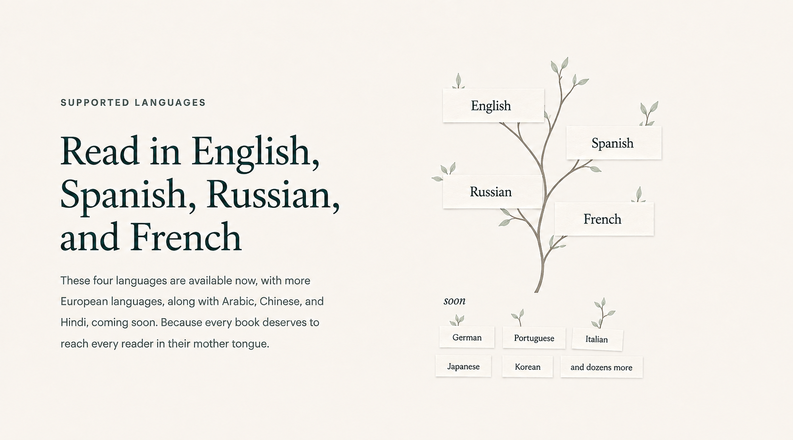
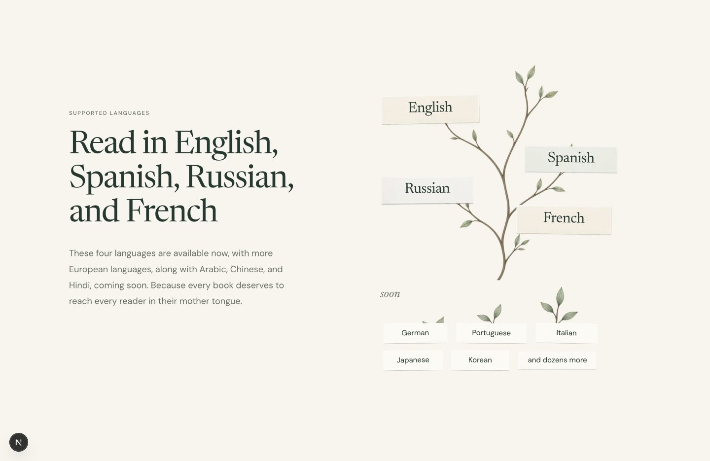

Language garden — mock and implementation
Same desktop composition. Source 1683×935 is normalized to a 1440px page width; implementation 1440×935. The existing 1160px landing container is retained. Original copy uses the live Newsreader/DM Sans fonts. Paper/tree positions follow the individually generated assets.
Source · amended tree and miniature future cards
Implementation · 1440px desktop
Focus · paper surfaces, branches and miniature labels
Source at normalized desktop scaleActual browser pixels